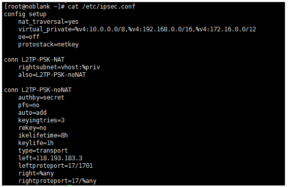

VPN搭建
vpn服务器搭建
安装环境
yum -y install gcc
yum -y install perl
yum -y install make
安装包
rpm -ivh dkms-2.0.17.5-1.noarch.rpm
rpm -ivh kernel_ppp_mppe-1.0.2-3dkms.noarch.rpm
rpm -ivh pptpd-1.4.0-1.el6.x86_64.rpm
1、配置ipsec.conf

2、共享密钥配置

3、修改/添加 /etc/sysctl.conf并生效
vim /etc/sysctl.conf 在/etc/sysctl.conf的末尾加上如下内容。
net.ipv4.ip_forward = 1
net.ipv4.conf.default.rp_filter = 0
net.ipv4.conf.all.send_redirects = 0
net.ipv4.conf.default.send_redirects = 0
net.ipv4.conf.all.log_martians = 0
net.ipv4.conf.default.log_martians = 0
net.ipv4.conf.default.accept_source_route = 0
net.ipv4.conf.all.accept_redirects = 0
net.ipv4.conf.default.accept_redirects = 0
net.ipv4.icmp_ignore_bogus_error_responses = 1
生效上面的修改使用如下命令
sysctl -p
4、验证ipsec运行状态

5、编辑 /etc/xl2tpd/xl2tpd.conf
ip range 客户端获取的IP范围，local ip VPN服务器端的IP

6、配置用户名,密码:编辑 /etc/ppp/chap-secrets

7、编辑 /etc/ppp/options.xl2tpd
[root@noblank ~]# cat /etc/ppp/options.xl2tpd
ipcp-accept-local
ipcp-accept-remote
ms-dns 8.8.8.8
ms-dns 8.8.4.4
# ms-dns 192.168.1.1
# ms-dns 192.168.1.3
# ms-wins 192.168.1.2
# ms-wins 192.168.1.4
noccp
auth
crtscts
idle 1800
mtu 1410
mru 1410
nodefaultroute
debug
lock
proxyarp
connect-delay 5000
# To allow authentication against a Windows domain EXAMPLE, and require the
# user to be in a group "VPN Users". Requires the samba-winbind package
# require-mschap-v2
# plugin winbind.so
# ntlm_auth-helper '/usr/bin/ntlm_auth --helper-protocol=ntlm-server-1 --require-membership-of="EXAMPLE\\VPN Users"'
# You need to join the domain on the server, for example using samba:
8、启动服务
service ipsec start
service xl2tpd start
9、防火墙配置
iptables -t nat -A POSTROUTING -m policy --dir out --pol none -j MASQUERADE
iptables -A FORWARD -i ppp+ -p all -m state --state NEW,ESTABLISHED,RELATED -j ACCEPT
iptables -A FORWARD -m state --state RELATED,ESTABLISHED -j ACCEPT
iptables -t nat -A POSTROUTING -s 192.168.1.0/24 -o eth0 -j MASQUERADE（eth0为公网网卡）

10.在win7上测试连接vpn
打开网络共享中心--设置新的连接或网络--连接到工作区--创建vpn
点击右下角网络图标--vpn连接--点击属性
1.常规中的ip为vps的公网ip
2.vpn类型：使用Ipsec 的第二层隧道协议(L2TP/IPsec)
数据加密：需要加(如果服务器拒绝将断开连接)
高级设置：使用预共享的密钥作身份验证
密钥：admin (前面设置过的)
点击确定后输入用户名和密码即可登陆。